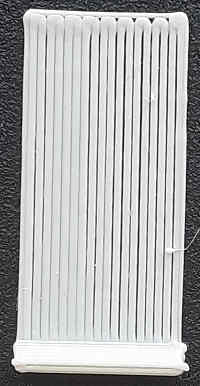

When clicking on the Generate button, the program will create and slice the test print. You have to send it to your printer and print it. During the print, observe the result of the patches against the photos below. While printing you can make adjustments already. You will have to tune your printer/firmware to correct the height. Once you found the right height you can repeat a full print of the pattern if needed.
Read the notes and advice below for more information.
Results
|  |  |
 |
 |
 |
||
| Too far away | Too far | Too far: You can spot a little gap |
Perfect | Too close | Warning! It's too close: check the thickness with your fingers! |
Far too close Dangerous for the bed |
How to tune your printer
If your printer has bed screws, use them to raise or lower the bed corresponding to the patch that needs adjustment. Don't forget to re-print the test after the adjustment to verify the compensation. Be careful, as most of the time, a half-turn corresponds to 0.2mm of height adjustment, which is typically the same as the height of the first layer. If you raise the bed, never turn more than that and usually only adjust by quarter-turn at most.
If it does not have bed screws, you have to use the software or modify the firmware configuration. Refer to the manual for your printer.
Advice
If your filament has a hard time sticking to the bed, you can try to:
- Increase the first layer width, it will increase the squish (pressure) without any over-extrusion. You can go as high as 200% nozzle width, but 150% should be enough. (Advanced setting, print -> width)
- Reduce the first layer printing speed to give it time to stick. (Advanced setting, print -> speed)
- You can disable/enable z-hop for the first layer by increasing "only lift z"-> above Z" to a higher value than your first layer height. Enabling it may pull the filament from the bed and disabling may let the nozzle hit the bed & push the deposited filament, so you have to test to find the optimal value. (Advanced setting, printer -> extruder)
Notes
This test uses your current first layer height, but you may want to increase it up to 80% of your nozzle height (before using 'generate') if it's the first time you are leveling your bed in order to reduce the risk of a nozzle crash.
If after the filament flow calibration it appears that the flow was very wrong, you may want to redo this calibration another time.
Most of the calibrations need to be done in the right order. This is the first one to do. But if you want to achieve good results you need to calibrate your extruder, e.g.: if you ask it to extrude 100mm of filament, that's exactly the length of the filament that the extruder needs to push into the nozzle.